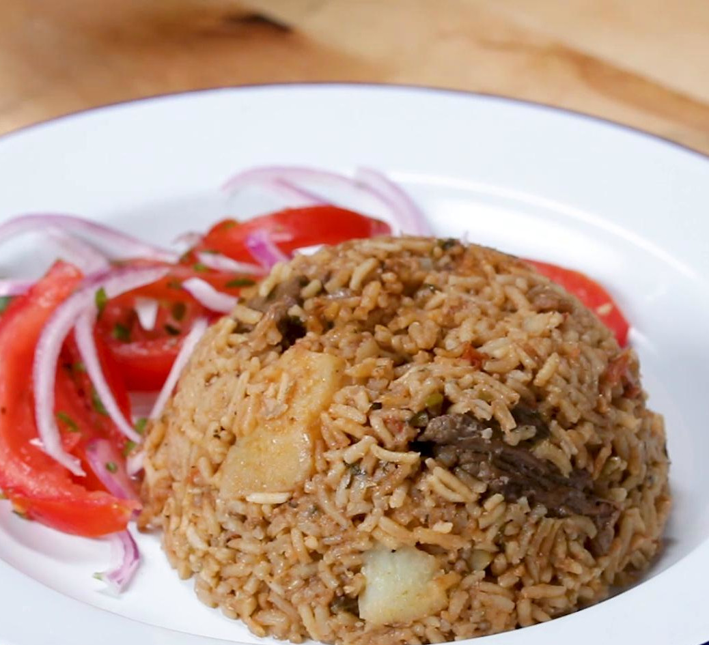

Pilau Recipe

Simple and authentic swahili pilau recipe
Pilau is a delicious one-pot Swahili dish made with rice and meat cooked with a number of spices.
Ingredients
- 2 cups rice
- 1kg boiled beef
- 5 medium sized potatoes peeled
- 2 medium red oinos thinly sliced
- 2 tbsp minced garlic
- 2 tbsp minced ginger
- 3 tomatoes sliced
- 5 cups water
- Masala:
- 1 tbsp cumin
- 1 tbsp paprika
- 1 tsp gound cardamon
- 1 tsp black pepper
- 1/4 tsp ground cloves
- 1 cinnamon stick
- 60ml vegetable oil
- 2 beef stock cubes
Steps
- Make the masala: In a medium bowl combine cumin, paprika, cardamon, black pepper and cloves, then set aside
- Heat the oil in a large pot over medium-high heat. Add the onions and saute for 10mins until dark brown.
- Add garlic,ginger,masala, beef stock cubes and cinnamon stick, then cook until fragnant.
- Add the beef and cook until browned.
- Add the tomatoes and cook for about 5mins.
- Add the potatoes and the water then bring it to a boil.
- Add the rice, stir and cover. Reduce the heat to medium-low and cook until the rice is cooked and all the water is absorbed.
Serve it with Kachumbari (Sliced onions, tomatoes and green chillies) and enjoy!